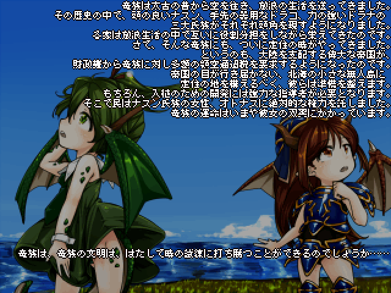

＜No.25
戻る
No.31＞
NO.28 - どらどら☆あいらんど・サガ
・入賞部門・
総合部門
熱中部門
技術部門
斬新部門

<22.0Mb>
最新パッチ(20/2/22)
感想を書く
【メロディックデス憲法21条1項および同条2項前段様からのコメント】
Nasoon:you're awful Alex
Alex:me? I'm awful oh yeah how am I awful?
Nasoon:Playing my game....inviting me on the kohaku...you just wanted to make fun of me in front of the tkoolers and piaiers....you're just like the rest of ‘em
Alex:you don't know the first thing about viprpg pal, look what happened because of what you did, what it led to. There are Vikings out there,Two dragons are in critical condition...
Nasoon:*laughs*
Alex:you're laughing you're laughing someone was killed today because of what you did
Nasoon:I know.. how about another ksg, Alex
Alex:no I think we've had enough of your ksg
Nasoon:what do you get...
Alex:no I don't think so
Nasoon:when you cross a MENTALLY ILL DRAGON WITH A TKOOLER THAT BULLIES HER AND TREATS HER LIKE TRASH
Alex:call Gomez, Brian
Nasoon:I'LL TELL YOU WHAT YOU GET, YOU GET WHAT YOU FUCKING DESERVE
…今回一枚絵を使わせていただいたsszさん、重ね重ねになりますがどうもありがとうございました。
あなたの絵がなければ、このゲームはヴァイキングのオッサンとヴァイキングのオッサンが殴り合うクッソ地味なゲームになっていました。
今回のエンジンは今後も使いまわすつもりで作ったので、皆さんまた別の祭りでお会いしましょう。
ただ、たくさん兵士出してワチャワチャする路線は激しく限界を感じるので今作が最後かもですが……
紹介ページへ


 NO.28 - どらどら☆あいらんど・サガ
NO.28 - どらどら☆あいらんど・サガ